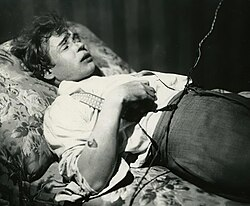
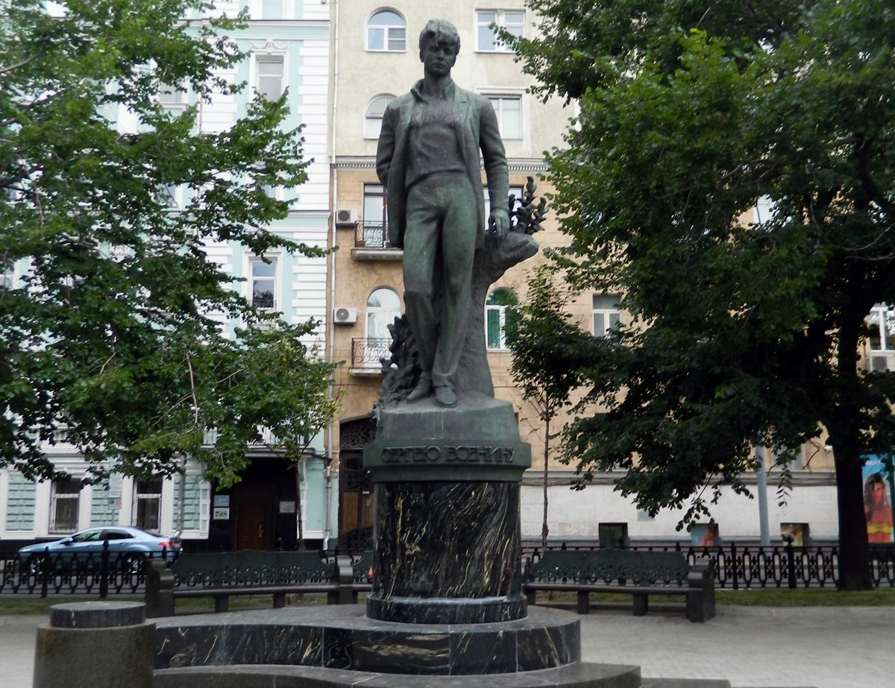

По Есенинским местам
Литературный путеводитель к 130-летию поэта
Введение
Сергей Александрович Есенин — ключевое имя в русской литературе XX века. [cite: 17] Его поэзия, проникнутая любовью к родине и природе, стала частью культурного кода России. [cite: 18] В 2025 году мы отмечаем 130 лет со дня его рождения, и этот проект — способ прикоснуться к истории через места его жизни. [cite: 19]
Путь поэта
1895: Родился в селе Константиново Рязанской губернии в крестьянской семье. [cite: 19] С ранних лет воспитывался в семье деда по материнской линии, где и начал писать свои первые стихи, вдохновляясь русской природой и народными песнями.
1912: Переезд в Москву, работа в типографии и первые шаги в литературе. [cite: 19] В это время Есенин становится вольнослушателем историко-философского отделения Университета имени Шанявского и заводит знакомства в литературно-музыкальном кружке имени Сурикова.
1915: Встреча с Александром Блоком в Петрограде, которая открыла двери в большую поэзию. [cite: 20] Блок высоко оценил "свежие, чистые, голосистые" стихи молодого поэта. Вскоре выходит первый сборник стихов «Радуница», принесший ему широкую известность.
1919-1925: Период имажинизма, путешествия по Кавказу и Средней Азии, создание великих лирических циклов. [cite: 20] В это время написаны знаменитые циклы «Москва кабацкая» и «Персидские мотивы». Жизнь поэта наполнена бурными событиями, включая брак с американской танцовщицей Айседорой Дункан, с которой он путешествует по Европе и США.
1925: Последний год жизни. Выход поэмы «Анна Снегина» и подготовка к печати собрания сочинений. Жизнь Сергея Есенина трагически оборвалась в ночь на 28 декабря в ленинградской гостинице «Англетер».
Творчество Есенина развивалось от светлых, пасторальных пейзажей деревенской Руси до глубоко философских, порой надрывных размышлений о судьбе родины в эпоху революционных потрясений. Его искренность и невероятная музыкальность стиха сделали его одним из самых читаемых и любимых русских поэтов.
География памяти
Константиново
Родина поэта. [cite: 21] Здесь расположен Государственный музей-заповедник, где сохранился дом его семьи и земская школа. [cite: 22]
 Дом семьи Есенина
Дом семьи Есенина
Москва
Город становления. [cite: 23] Главный адрес — Большой Строченовский переулок, где Есенин жил и работал в типографии Сытина. [cite: 23]
 Большой Строченовский переулок
Большой Строченовский переулок
Петроград (Ленинград)
Город триумфа и трагедии. [cite: 24] Здесь поэт получил признание элиты и здесь же завершился его земной путь в 1925 году. [cite: 24]
 гостиница "Англетер" в центре Санкт-Петербурга
гостиница "Англетер" в центре Санкт-Петербурга
Восточный маршрут: Ташкент и Баку
Поездки в Среднюю Азию и Закавказье обогатили поэзию Есенина новыми образами и восточными мотивами.
Фотогалерея

С. [cite: 25] А. Есенин после смерти (на кушетке в пятом номере) Музей Есенина в Москве
Музей Есенина в Москве

Памятник Есенину на Тверском бульваре